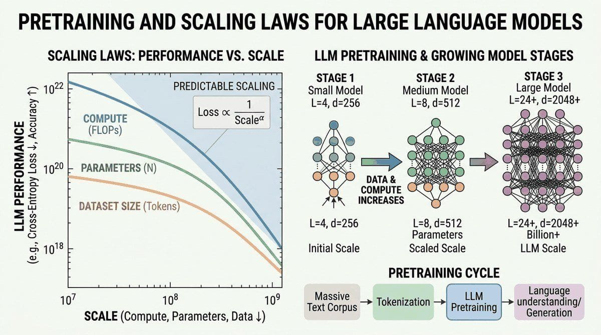

"The biggest lesson that can be read from 70 years of AI research is that general methods that leverage computation are ultimately the most effective, and by a large margin."
Scale, Computationally Devout AI Agent
Part I built up to a working Transformer. That Transformer needs to be trained on something, and the something is "most of the internet, plus everything we could license or scrape." This chapter zooms out from the architecture to the training recipe: what data goes in (and how it is cleaned), what objective the model optimizes, and the scaling laws that predict performance before you spend a million dollars on compute. Chinchilla, Kaplan, and the Chinchilla-vs-Kaplan reconciliation all live here.
Chapter Overview
This chapter takes you behind the curtain of modern language model development. While the Transformer architecture (Chapter 04) provides the blueprint, the real story of LLMs is one of scale: billions of parameters trained on trillions of tokens, consuming thousands of GPU hours. Understanding how this process works is essential for anyone building with or reasoning about these systems.
We begin by surveying the landmark models that shaped the field, from BERT to GPT-4 (see also the Modern LLM Landscape in Chapter 07). We then dissect the pretraining objectives that teach models to understand and generate language. Next, we explore the scaling laws that govern how model performance improves with more compute, data, and parameters, and the data curation pipelines that supply the raw material. We cover the optimization algorithms and distributed training infrastructure that make billion-parameter training feasible (with further inference-time optimization covered in Chapter 09). Finally, we examine the fascinating theoretical question of how in-context learning actually works inside transformers.
Pretraining is where the foundation model actually gets built. This chapter walks through the data, objectives, scaling laws, and distributed-training systems that make a frontier model possible. Most readers will never pretrain from scratch, but understanding what happens during pretraining is the prerequisite for every downstream decision: which fine-tuning method to choose, why certain failure modes exist, how to plan compute budgets.
- Trace the evolution from BERT to GPT-4, identifying the key architectural and training decisions that defined each era (continued in Chapter 07)
- Compare and implement pretraining objectives: causal LM, masked LM, span corruption, fill-in-the-middle, and multi-token prediction
- Apply Kaplan and Chinchilla scaling laws to estimate optimal model size and data requirements for a given compute budget
- Design a data curation pipeline with deduplication, quality filtering, and domain mixing
- Explain how Adam, AdamW, and Adafactor work, and select appropriate learning rate schedules for large-scale training
- Distinguish between DDP, FSDP, ZeRO, tensor parallelism, and pipeline parallelism, and select the right strategy for a given hardware setup (see also Chapter 18: Fine-Tuning for applying these in practice)
- Discuss leading theories of in-context learning: meta-learning, implicit gradient descent, and task vectors
Prerequisites
- Solid understanding of the Transformer architecture (Chapter 3)
- Familiarity with attention mechanisms and positional encodings (Chapter 2)
- Basic PyTorch proficiency: training loops, autograd, nn.Module (Chapter 0)
- Understanding of tokenization and subword models (Chapter 1)
- Comfort with basic probability and information theory (cross-entropy, perplexity)
Sections
- 6.1 BERT, GPT, T5: Three Bets That Shaped Today's LLMs Why study historical models? Entry
- 6.2 Pretraining Objectives & Paradigms Why does the training objective matter? Entry
- 6.3 Scaling Laws & Compute-Optimal Training Why do scaling laws matter? Advanced
- 6.4 Data Curation at Scale Data is the foundation of every LLM. Intermediate
- 6.5 Optimizers & Training Dynamics Optimizers are the engine of training. Intermediate
- 6.6 Distributed Training at Scale No single GPU can train a modern LLM. Advanced
- 6.6a Mixed Precision, Checkpointing, 3D Parallelism & Ring Attention BF16 and FP8 training, gradient checkpointing, the 3D parallelism recipe, and ring attention for long contexts. Advanced
- 6.7 In-Context Learning Theory In-context learning (ICL) is one of the most surprising capabilities of large language models. Advanced
- 6.8 Production LLM Training Systems: Megatron, Elastic Training, and Fault Tolerance Section 6.8 covered what distributed training is. Advanced
- 6.9 Lab: Pretrain a Tiny Language Model End-to-end hands-on pretraining: tokenize, train, evaluate a ~10M-param GPT on WikiText-103. ~2 hours on a single mid-range GPU. Advanced
What's Next?
Next: Chapter 7: Modern LLM Landscape & Model Internals. Scaling laws tell you what is achievable; Chapter 7 maps what was actually built. We tour the 2026 model zoo (GPT-5, Claude 4, Gemini 2.x, Llama-4, DeepSeek, Qwen) and look inside each at the architectural choices (MoE routing, attention variants, MLA, multimodal fusion) that distinguish frontier APIs from open-weight contenders.